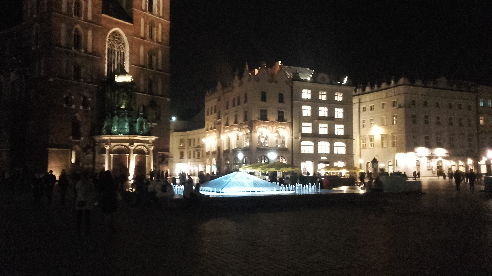

Krakowskie podboje vol.1.
Kraków.... to jest to co psiaki kochają najbardziej, przestrzeń, ogród, inne psy i całe spektrum nowych zapachów. Ale zacznę od przygotowania. Moi państwo szykują się już dzień wcześniej na taki wyjazd. Zazwyczaj wyprawa trwa 2 dni. Muszę spakować budę, zabawkę, szczotkę do grabienia mojej sierści (choć nie wiem po co, ale fajnie drapie), michy do jedzenia, to podstawa i oczywiście całe mnóstwo szamy. Komu w drogę temu.... trzeba wskoczyć do bagażnika. Moi Państwo wożą mnie na dwa sposoby: pierwszy to w bagażniku. Wskakuję i mam całkiem niezły punkt obserwacji świata. Swoją drogą to dziwne uczucie, gdy sobie siedzę, a cały świat pędzi. Drugim sposobem jest na tylnym siedzeniu, jak prawdziwy prezes. Aby było bezpiecznie muszę ubrać szelki i podpinam się do pasów. Podróż mija mi zaskakująco szybko, ponieważ lubię uciąć sobie małą drzemkę aby mieć sił na harce w Krakowie. Gdy dojedziemy na miejsce zaczyna się niezły Meksyk. Gaz w łapach i obiegnięcie całego ogrodu... oczywiście razy 5x. Tu jest mój teren. 1ha ogrodu do biegania, a także do pilnowania (ciężka robota ale niezwykle ważna). Można robić grilla (to moje ulubione zajęcie po bieganiu za kijem), oraz pomagać moim właścicielom walczyć z ryczącą kosiarką. Choć do tej pory nie wiem dlaczego jak im pomagam to się złoszczą i każą mi wracać do domu. Pewnie nie chcą abym się zmęczył. W Krakowie mogę iść na spacer w każdej chwili. Bardzo bym chciał kiedyś aby mnie zabrali nad Wisłę, pokazali smoka (ciekawe czy go pogonię tak jak kurczaki), chciałbym póść na rynek i zobaczyć tych wszystkich ludzi do obwąchania :) Ale jak narazie muszą mi wystarczyć opowiadania moich właścicieli. Do krakowskich przygód napewno jeszczę powrócę...